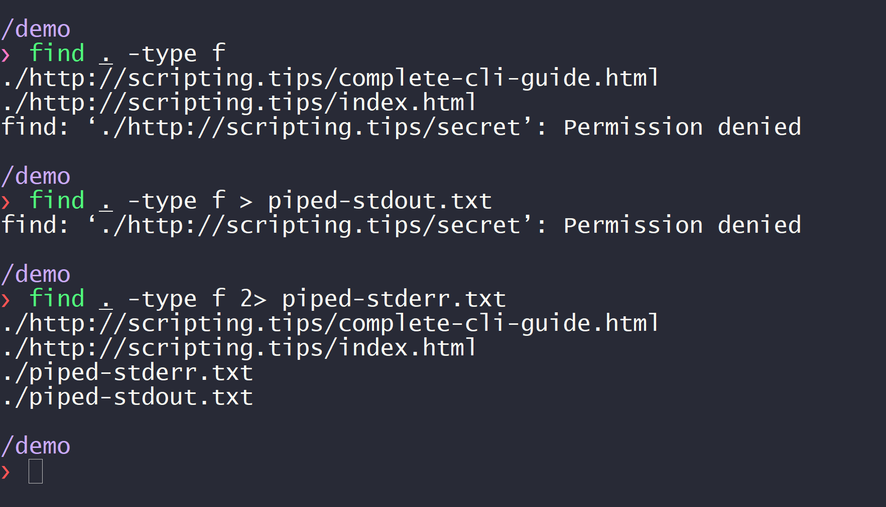

Every program can output text to two standard streams: standard output (stdout) and standard error (stderr). In this article, I will explain what these streams are designed for, and how to use them properly in python. Standard output vs error Standard output is where your script main's output should go. For instance, the command ls is responsible for listing the content of a directory. This listing goes to stdout. Standard error is where debugging information and errors should go. The name is a bit misleading because you can use it to display runtime informations and not only errors. By default both streams are printed to the terminal and it doesn't seem like using one or the other makes a difference. This difference becomes apparent when using pipelines. Pipelines and the unix philosopy To understand the importance of pipelines, we must go back to the original unix philosophy: Write programs that do one thing and do it well. Write programs to work together. Write programs to handle text streams, because that is a universal interface. -- Peter H. Salus, A Quarter-Century of Unix (1994) The unix philosophy is to craft small scripts that do one thing well, and chain them with other scripts to do bigger things. The main tool to this end is to use pipes, which allow to send the output of one program as input to another. For instance, if you want to display a listing of the current directory, you can use the ls command: $ ls http-scripting.tips script.py index.html If you further want to filter this listing and keep only the python files, you can pipe its output into grep: $ ls | grep .py script.py And this is where the distinction between stderr and stdout matters: the pipe will forward stdout of ls to the input of grep. Meanwhile, stderr is not piped and still displayed to the terminal screen. Another common usage is to pipe stdout or stderr to files. Piping stdout can be achieved with the > operator, and piping stderr can be achieved with the 2> operator: $ ls > stdout.txt $ ls 2> stderr.txt We can use these pipes to make sure that an executable prints to the correct stream. Inspecting find's output streams The command find prints a listing of the current directory and its subdirectories. Let's verify that is uses stdout and stderr like it should. In the screenshot below, find is unable to read the content of the folder secret/. Using pipes, I show that the listing is printed to stdout and the error to stderr:  On the screenshot, I ran three commands. The first command is: find . -type f which prints both the listing and the error to the terminal screen. The second command is: find . -type f > piped-stdout.txt And we can see that now, only the error is displayed to the screen. That is because the content of stdout is sent to the file piped-stdout.txt. The third command is: find . -type f 2> piped-stderr.txt And this time we can see the listing but not the error. This is because stderr was sent to the file piped-stderr.txt. How to use stderr in python? Displaying runtime information, debug, warnings and errors is done in python through the standard logging module. This module will output to stderr by default, as it should. logging can do a lot, so I advise to go through the documentation. But if you just want a quick way to output stuff on stderr, use the logging.xxx approach. For instance: import logging as log def download(url): log.debug(f'downloading {url}') needed_space = space_for(url) if disk_space < needed_space: log.error('Unable to download {url}: not enough memory') elif disk_space - needed_space < threshold: log.warning('Low disk space after download') #... You can output information at different levels: import logging logging.debug(f'starting iteration {i}/{n}, value is {value}') logging.info(f'download finished') logging.warning(f'low disk space') logging.error(f'program cannot do this') logging.critical(f'program cannot recover and stops now') And then choose which level to display: import logging if __name__ == '__main__': # display DEBUG and everything above: logging.basicConfig(level=logging.DEBUG) # only display WARNING and above (ERROR, CRITICAL): logging.basicConfig(level=logging.WARNING) Thanks to the click-log library, the boiler-plate for this configuration can be automated — assuming you use the click library to craft your command-line interface. See also: how to craft beautiful command-line interfaces. Beyond simple usage loggers: create several loggers with different output levels formatters: automatically format your messages handlers: redirect logging output to console/file/email/other Only use print for the main output If your script communicates its output through text, you should use stdout to print this output. Users can use pipes to save this output to a file, or you can accept an optional -o argument. Everything else should be written to stderr using the logging module. Improve terminal experience When stderr and stdout are printed to the terminal, it is a good idea to embelish your text for human readability. Always remember that both stdout and stderr could be piped to files. In this case, colors and other visual artefacts should be stripped so that ANSI escape codes do not pollute the files. Luckily, we won't have to worry about this when using the proper libraries. Securely prompt for passwords A password prompt should not display the password that is being entered. And the prompt should be displayed neither on stdout, nor on stderr, so that the user can enter his/her password even when the output streams are piped. To do so, there is a module named getpass in the standard library: test.py from getpass import getpass password = getpass() We can make sure that the prompt is not printed on stdout and stderr by piping both to file: $ python3 test.py > out.txt 2> err.txt Password: Note: the click library also has functions to prompt for passwords, however you should not use it. click prints the prompt to stdout, which is bad practice. There is an open issue about this on their bug tracker. Output colored text To color text in a Windows terminal, we can use ANSI escape codes. However, these escape codes should be stripped when the output stream is piped into an other program or a file, and they are not recognized natively on Windows. Luckily, the colorama library handles these caveats and can color terminal output in a cross-platform way. Install it with: pip install colorama And here's how to use it (for instance, using print, but it works with logging too!): import colorama from colorama import Fore, Back, Style # Init once at startup to detect the platform (Windows, osx, etc.) colorama.init() print(Fore.RED + 'some red text') print(Back.GREEN + 'and with a green background') print(Style.DIM + 'and in dim text') print(Style.RESET_ALL) print('back to normal now') By default, colorama adopts the same behavior as escape codes, so each color must be explicitely reset. The termcolor library provides an interface that is easier to use, and integrates perfectly with colorama. Here is an example using logging this time: from colorama import init from termcolor import colored import logging as log log.basicConfig(level=log.INFO) # use Colorama to make Termcolor work on Windows too init() # then use Termcolor for all colored text output log.info(colored('Hello, World!', 'green')) Remember that by changing the default formatter for your logs, you can add colors automatically. Display dynamic progress bars An application should be quiet by default and only print important warning and errors. This is the zen of unix. But when your application spends a large amount of time performing a task, it is a good idea to accept an input parameter such as -v or --verbose and update the user regularly with the status of your script. To display progress bars, which are useful when downloading large files for instance, I advise to use Tqdm which is the python library to display dynamic progress bars. And as you can expect from a well-designed tool: it prints to stderr by default. Here is what the doc says: Overhead is low – about 60ns per iteration (80ns with tqdm_gui), and is unit tested against performance regression. By comparison, the well-established ProgressBar has an 800ns/iter overhead. In addition to its low overhead, tqdm uses smart algorithms to predict the remaining time and to skip unnecessary iteration displays, which allows for a negligible overhead in most cases. tqdm works on any platform (Linux, Windows, Mac, FreeBSD, NetBSD, Solaris/SunOS), in any console or in a GUI, and is also friendly with IPython/Jupyter notebooks. Here's how to use it: from tqdm import tqdm # pip install tqdm for i in tqdm(range(10000)): pass And here's the output: Another option is Click, which has a function to display progress bars. It prints to stdout by default, so remember to pass the argument file=sys.stderr to fix it. Read next This article is the second chapter of my complete guide to command-line tools in python. Previous chapter: The command-line interface. Next chapter: Catch and handle signals in python.
Other articles you might like: Keyboard shortcut and command line utility to switch display (Windows) Using WSL-2 as a dev environment Introduction to statistical estimators